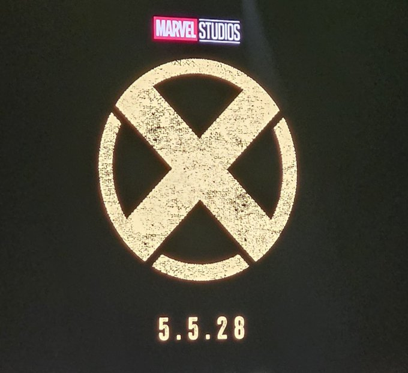
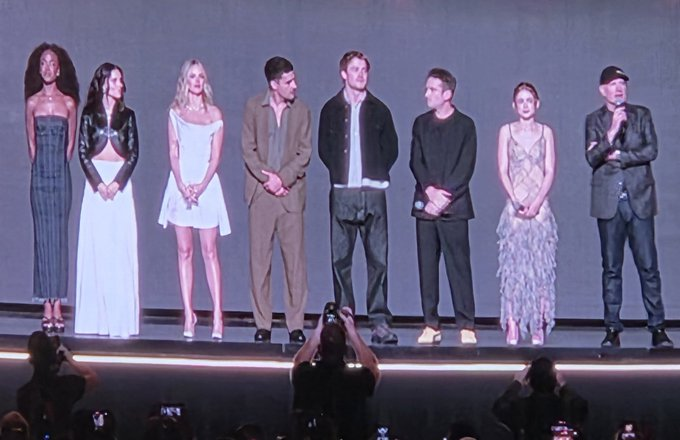
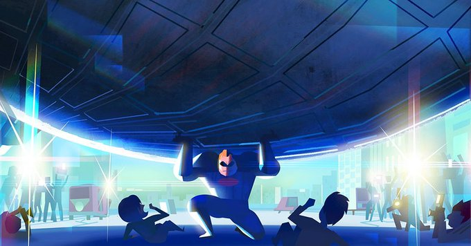
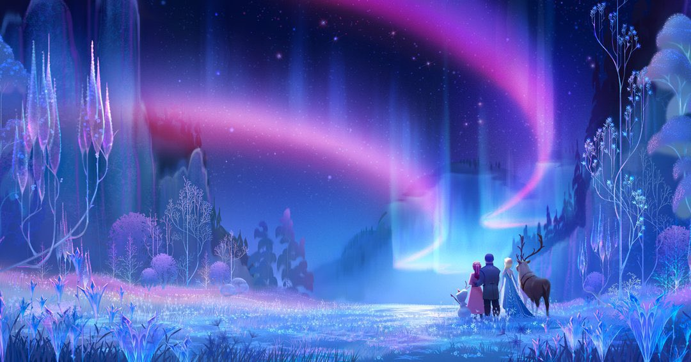
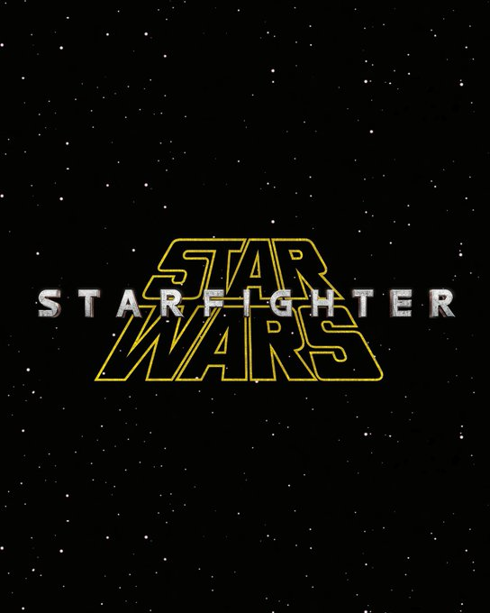
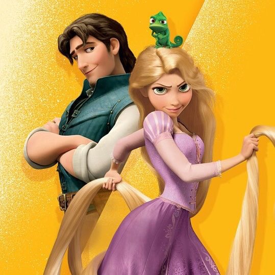
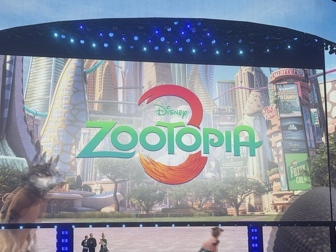
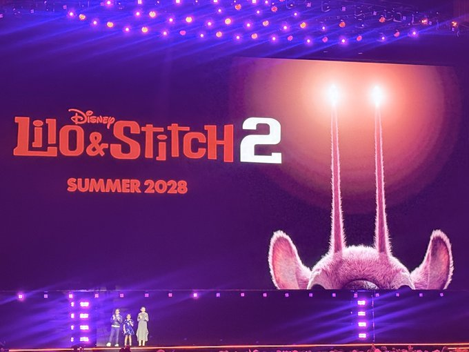
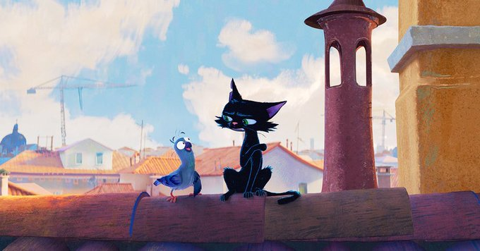

Le rideau est tombé sur le Disney Entertainment Showcase de la D23 2026, neige artificielle comprise. Il y a quelques jours, on s'était livrés à l'exercice périlleux des pronostics sur ce que Kevin Feige et la maison Disney allaient dégainer. Résultat des courses : certaines prédictions sont tombées pile, d'autres ont été littéralement pulvérisées par l'ampleur des annonces, et quelques-unes n'ont tout simplement jamais eu lieu. Petit debrief, tampon par tampon.
Méthode : pour chaque prédiction, on rappelle l'indice de plausibilité initial, suivi du verdict réel constaté pendant le Showcase du 15 août.
Sommaire de l'article
1. Nova : l'officialisation de la branche cosmique
Rien. Pas un logo, pas une ligne sur Richard Rider durant tout le Showcase. Le dossier cosmique reste donc entièrement fermé pour l'instant, malgré nos attentes.
2. X-Men MCU : Logo et casting partiel
C'est là que Marvel a frappé le plus fort de la soirée. Pas de simple logo ou de duo d'acteurs : Sadie Sink et le réalisateur Jake Schreier ont dévoilé l'intégralité du casting principal. Kit Connor en Cyclope, Christopher Abbott en Professeur X, Maya Boyd en Tornade, Samara Weaving en Emma Frost, Inde Navarrette en Malicia, et la surprise totale : Adam Driver en Mr. Sinister. Sink elle-même incarne Jean Grey. Sortie annoncée pour le 5 mai 2028. On visait juste, mais on a largement sous-estimé l'ampleur du move.


3. VisionQuest : le trailer tant attendu
Kevin Feige, Paul Bettany et James Spader sont montés sur scène ensemble pour présenter un nouveau trailer. Diffusion annoncée en octobre sur Disney+. Prédiction en plein dans le mille.
4. Friendly Neighborhood Spider-Man Saison 2
Malgré les 65 ans de Spider-Man célébrés cette année, rien n'a filtré sur la saison 2 durant ce panel. Possible qu'une annonce séparée soit encore prévue ailleurs, mais sur ce Showcase précis, silence complet.
5. Avengers Endgame: Encore : la bande-annonce
Pas de trailer pour la ressortie d'Endgame. En revanche, consolation de taille : un tout nouveau trailer d'Avengers: Doomsday a été projeté, avec Robert Downey Jr., Hayley Atwell et Chris Evans sur scène. Dr Doom sur son trône, Magneto, Gambit, une armée de Sentinelles, Mr. Fantastic qui confronte Victor face à face. La promo Endgame attendra, mais Doomsday a largement pris le relais côté hype.
6. Marvel Zombies Saison 2
Pas un mot sur une éventuelle saison 2. Le volet animation adulte de Marvel reste pour l'instant sans nouvelles fraîches.
7. Percy Jackson Saison 3
Le cast complet était bien présent sur scène. On apprend l'arrivée des Chasseresses d'Artémis, de nouveaux demi-dieux, et de nouveaux personnages dont Athéna et Héra (jouée par Ming-Na Wen). Diffusion prévue le 20 novembre. Prédiction validée à 100%.
8. Les Indestructibles 3 : premier visuel et saut dans le temps ?
Pete Docter a bien dévoilé du concept-art pour les 40 ans de Pixar. Violet et Dash prennent effectivement le relais en tant que jeunes héros, Jack-Jack reste incontrôlable, et Bob doit composer avec sa propre obsolescence face à une nouvelle génération de Supers. Sortie calée en juin 2028. Le « saut dans le temps » façon Jack-Jack ado n'est pas formulé tel quel, mais l'esprit de notre théorie, la relève générationnelle, colle plutôt bien à ce qui a été montré.

9. Disney Parks (Panel Horizons) : Villains Land
Le panel Parks (Horizons: A Carousel of Progress, animé par Neil Patrick Harris) est un événement distinct du Disney Entertainment Showcase. Aucune information sur Villains Land, Piston Peak ou le dark-ride Coco n'a émergé de cette soirée précise, il faudra se référer à la couverture dédiée du panel Parks pour trancher ce point.
10. Les surprises qu'on n'avait pas vues venir
Une bonne partie du Showcase s'est jouée en dehors de notre radar 100% Marvel/mutants. Quelques flashs à retenir : un premier aperçu de Frozen 3 (automne 2027) avec un nouveau personnage aux pouvoirs de glace, le logo officiel de Star Wars: Starfighter de Shawn Levy, l'histoire d'un homme du mauvais côté de la galaxie propriétaire du chasseur stellaire le plus rapide jamais construit, incarné par Ryan Gosling, , une date pour Ahsoka Saison 2 en janvier, Tangled en live-action calé pour mars 2028 avec Kathryn Hahn en Mère Gothel, une adaptation anime de Kingdom Hearts en partenariat avec Square Enix, l'arrivée d'Angel dans Lilo & Stitch 2, un aperçu de Gatto par le réalisateur de Luca, Coco 2 annoncé pour 2029, et la confirmation officielle de Zootopia 3.






Le score final
Sur les neuf prédictions, trois tombent pile, une explose totalement notre pronostic (dans le bon sens), trois ne se sont jamais matérialisées, une a été remplacée par une autre annonce tout aussi forte, et une reste en attente faute de couverture. Pas un sans-faute, mais un bilan honorable pour un exercice qui reste, par nature, un pari sur l'avenir. Rendez-vous à la prochaine convention pour retenter le coup.